Materials and Appearances
Material
自然界中的材质：
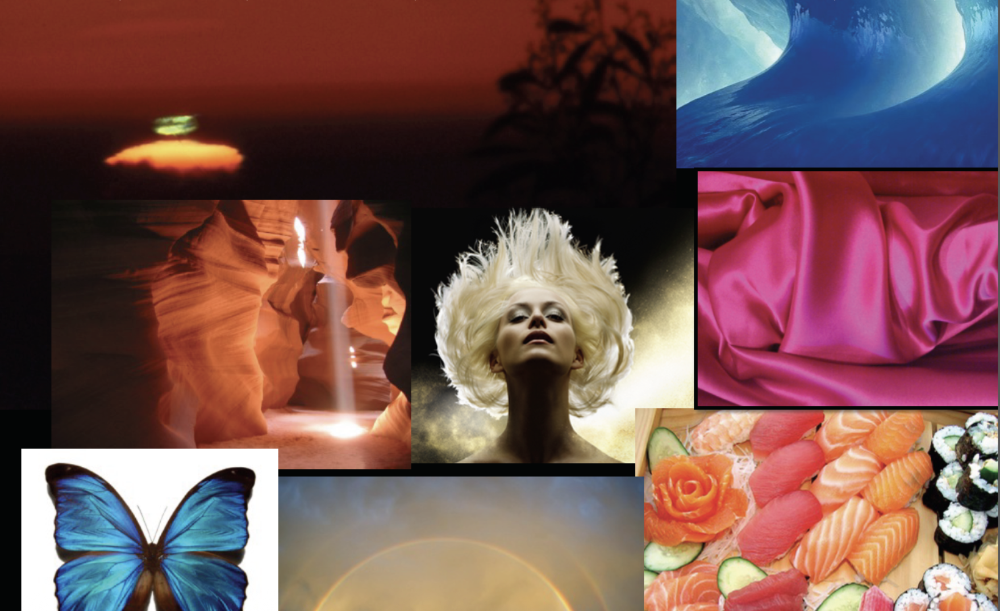
CG 中的材质：
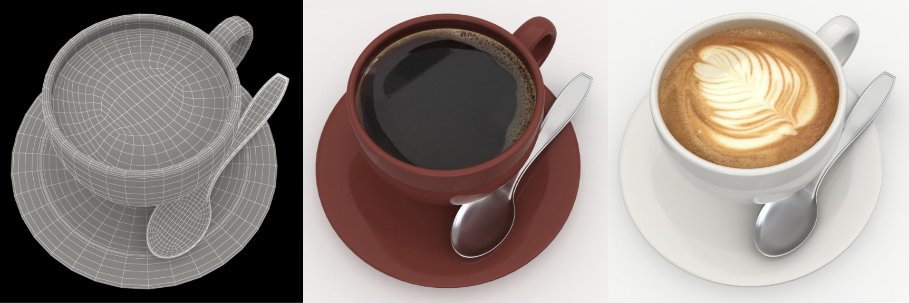
从数学角度看，材质(materials)就是渲染方程中的 BRDF。下面列举一些常见的材质：
-
漫反射/朗伯(diffuse/Lambertian)材质
-
原理图：

-
渲染效果：


-
假设入射光线的分布是均匀的，辐射率也是一样的；并且出射光线也是均匀分布，与入射光的辐射率一样（能量守恒），那么
\[ \begin{aligned}L_o(\omega_o)&=\int_{H^2}f_rL_i(\omega_i)\cos\theta_i\mathrm{d}\omega_i\\&=f_rL_i\int_{H^2}(\omega_i)\cos\theta_i\mathrm{~d}\omega_i\\&=\pi f_rL_i\end{aligned} \]假设 \(f_r, L_i\) 这两项是常数
-
其中 \(f_r = \dfrac{\rho}{\pi}\)，其中 \(\rho\) 叫做反射率(albedo)（取值范围：[0, 1]），和颜色相关
-
-
光泽(glossy)材质
-
原理图：
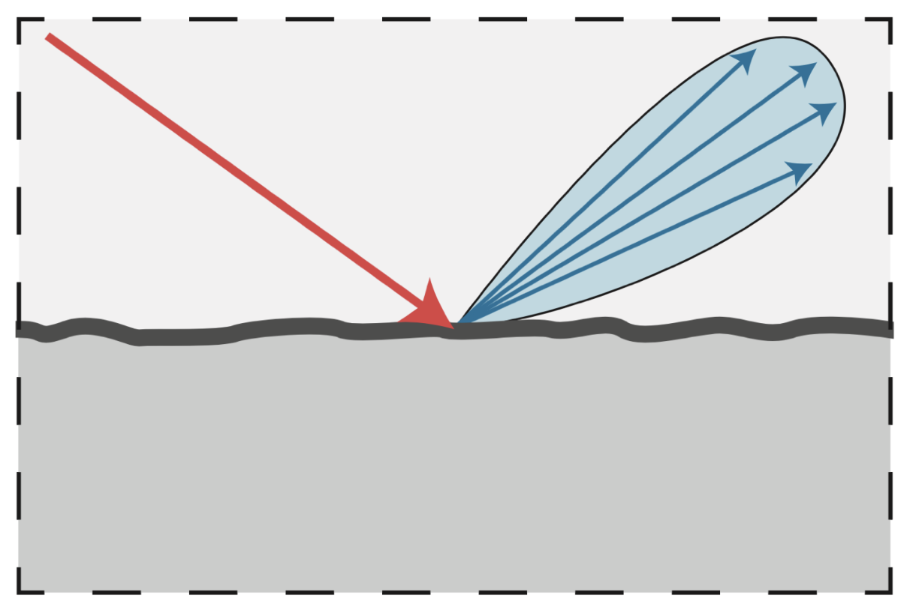
-
渲染效果：
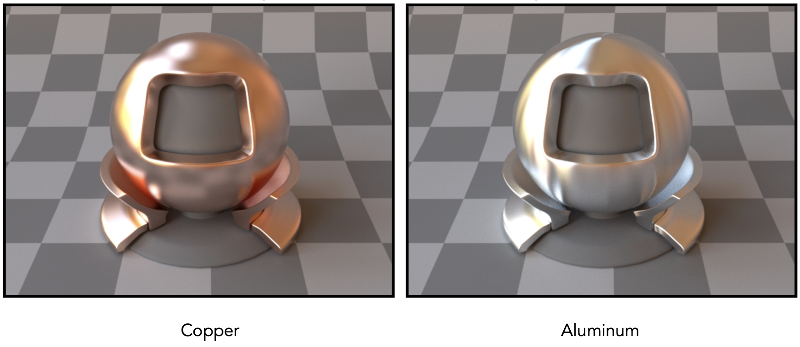
-
-
理想反射/折射(ideal reflection/refraction)材质
-
原理图：
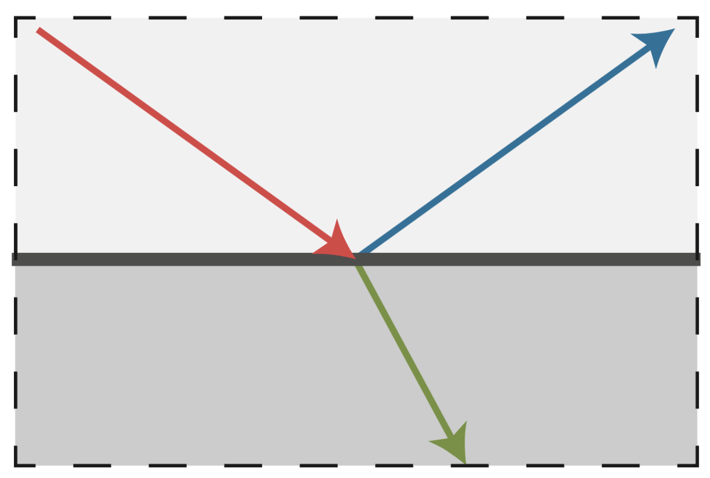
-
渲染效果：
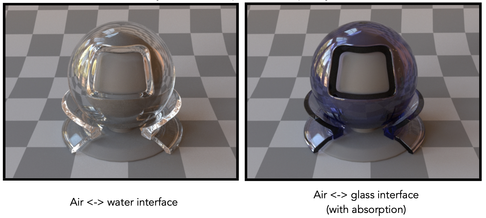
- 对于右图，部分折射光被吸收，所以呈现颜色
-
Reflection
完美的镜面反射(perfect specular reflection)：

反射的两种理解：
-
极角(polar angle)：
 \[ \begin{align*} \omega_o + \omega_i &= 2 \cos \theta \vec{n} = 2 (\omega_i \cdot \vec{n}) \vec{n} \\ \omega_o &= -\omega_i + 2 (\omega_i \cdot \vec{n}) \vec{n} \end{align*} \]
\[ \begin{align*} \omega_o + \omega_i &= 2 \cos \theta \vec{n} = 2 (\omega_i \cdot \vec{n}) \vec{n} \\ \omega_o &= -\omega_i + 2 (\omega_i \cdot \vec{n}) \vec{n} \end{align*} \] -
方位角(azimuthal angle)：
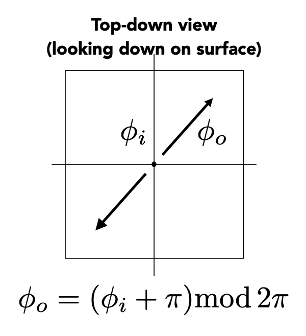
\[ \varphi_o = (\varphi_i + \pi) \bmod 2\pi \]
渲染效果：

Refraction
光线除了从物体表面上反射出去，也有可能通过折射穿过表面。当进入新的介质时，光的折射发生。
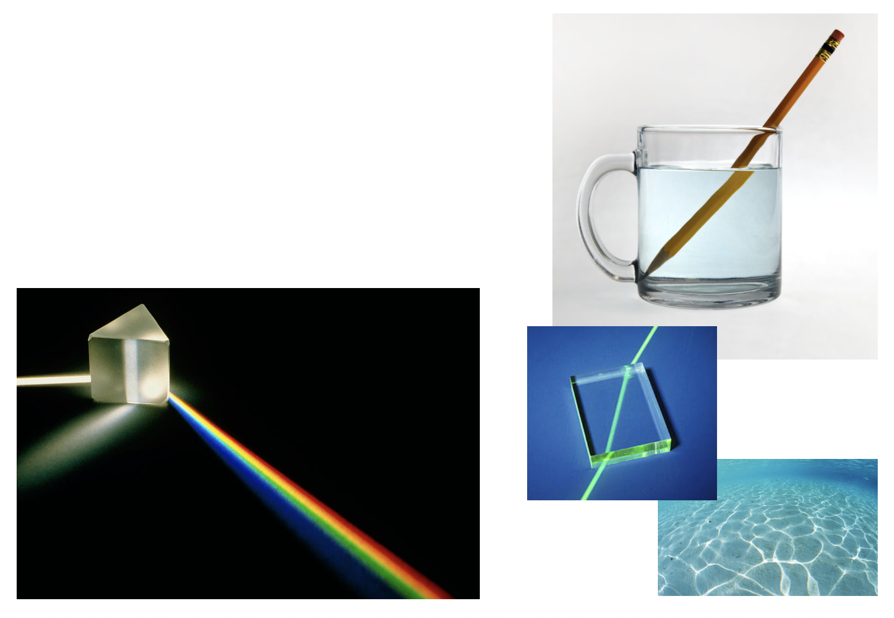

- 右下角关于海水的那幅图涉及到焦散(caustic)现象：由光线集中所形成的弯曲、明亮的图案，比如图中海水上的光纹
关于光的折射有一个著名的物理定律，即斯涅尔定律(Snell's Law)（又称折射定律(law of refraction)）。该定律指出，透射角度取决于入射光和出射光的折射率(IOR, index of refraction)，具体满足的关系如下： $$ \eta_i \sin \theta_i = \eta_t \sin \theta_t $$
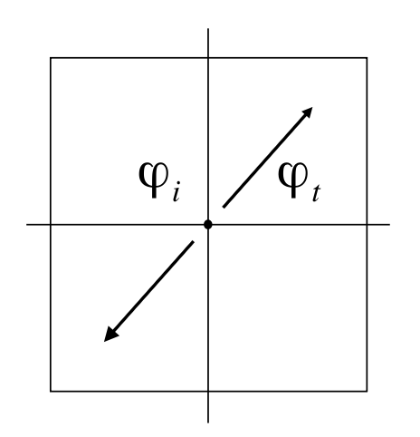
方向角的计算和反射类似： $$ \varphi_t = \varphi_i \pm \pi $$
常见材质的折射率如下：
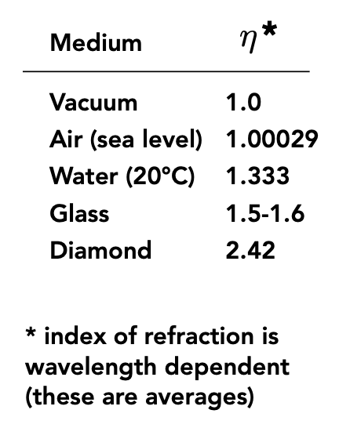
根据折射定律，在已知入射光和出射光的折射率，以及入射角的情况下，就能计算出射角的大小了：
该式子成立的前提是算术平方根内的式子不小于0。一旦小于0，就说明出现了全反射(total internal reflection)的现象。此时 \(\dfrac{\eta_i}{\eta_t} > 1\)，即入射光的反射率大于出射光的反射率。
一种常见的光学现象背后的原理正是全反射，它就是斯涅尔窗/圆(Snell's window / circle)：从水底往上看时，我们只能看到一块圆形区域内的光照，区域外是一片黑暗。示意图如下：
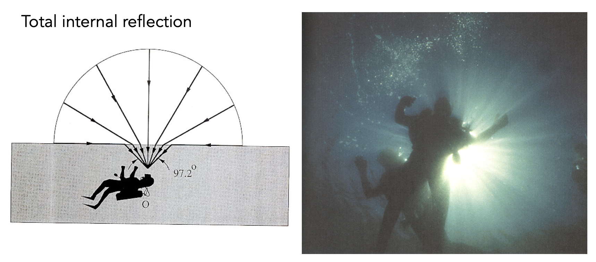
补充
BSDF（"S" 代表散射(scatter)）= BRDF + BTDF（"T" 代表透射(transmit)（折射））
Fresnel Term
菲涅尔项(Fresnel term)：反射率(reflectance)取决于入射角度（以及光的偏振(polarization)）。
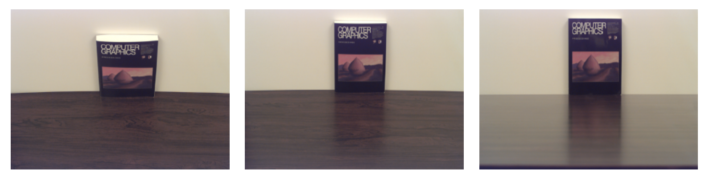
上面的例子反映了反射率随掠射角(grazing angle)（入射光线与法线的夹角）增大（即入射光越靠近表面）而增加（桌子上书本和墙壁的反光越明显）。
不同物体的菲涅尔项（横轴表示掠射角，纵轴表示反射率；图中的两条虚线表示考虑偏振的情况，不过一般无需考虑）
-
电介质(dielectric)（\(\eta = 1.5\)）

-
导体(conductor)

补充
导体的折射率是复数（
不是负数）
菲涅尔项的计算公式：
-
精确版：考虑偏振
\[ \begin{align*} R_\mathrm{s}&=\left|\frac{n_1\cos\theta_\mathrm{i}-n_2\cos\theta_\mathrm{t}}{n_1\cos\theta_\mathrm{i}+n_2\cos\theta_\mathrm{t}}\right|^2=\left|\frac{n_1\cos\theta_\mathrm{i}-n_2\sqrt{1-\left(\frac{n_1}{n_2}\sin\theta_\mathrm{i}\right)^2}}{n_1\cos\theta_\mathrm{i}+n_2\sqrt{1-\left(\frac{n_1}{n_2}\sin\theta_\mathrm{i}\right)^2}}\right|^2 \\ R_\mathrm{p}&=\left|\frac{n_1\cos\theta_\mathrm{t}-n_2\cos\theta_\mathrm{i}}{n_1\cos\theta_\mathrm{t}+n_2\cos\theta_\mathrm{i}}\right|^2=\left|\frac{n_1\sqrt{1-\left(\frac{n_1}{n_2}\sin\theta_\mathrm{i}\right)^2}-n_2\cos\theta_\mathrm{i}}{n_1\sqrt{1-\left(\frac{n_1}{n_2}\sin\theta_\mathrm{i}\right)^2}+n_2\cos\theta_\mathrm{i}}\right|^2 \\ R_{\text{eff}} & = \dfrac{1}{2} (R_\mathrm{s} + R_\mathrm{p}) \end{align*} \] -
近似版：施利克近似(Schlick’s approximation)
\[ \begin{aligned}R(\theta)&=R_0+(1-R_0)(1-\cos\theta)^5\\R_{0}&=\left(\frac{n_1-n_2}{n_1+n_2}\right)^2\end{aligned} \]
精确版计算过于麻烦，所以在 CG 中如果不做很高的要求，一般就用近似版。
Microfacet Material
引入

如图所示，这是从太空拍摄的地球图片。图中一块明亮的部分正是澳大利亚，看起来像一块平滑的表面。但实际上地球表面地形复杂，还有很多建筑，所以不可能是光滑的，但从远处看我们就难以观察这些细节了——这正是微表面材质的思路。
微表面(microfacet)的理论：
-
对于实际上粗糙的表面
- 宏观角度（材质）看：平坦而粗糙
- 微观角度（几何）看：崎岖而光滑
-
表面上的单个元素就像镜子一样
- 称为微表面
- 每个微表面都有自己的法线

微表面 BRDF 的关键是微表面法线的分布
-
法线分布聚集 <==> 看起来像镜面反射
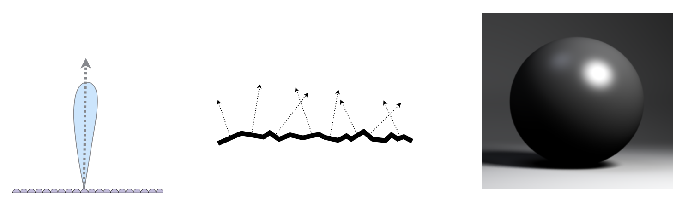
-
法线分布发散 <==> 看起来像漫反射
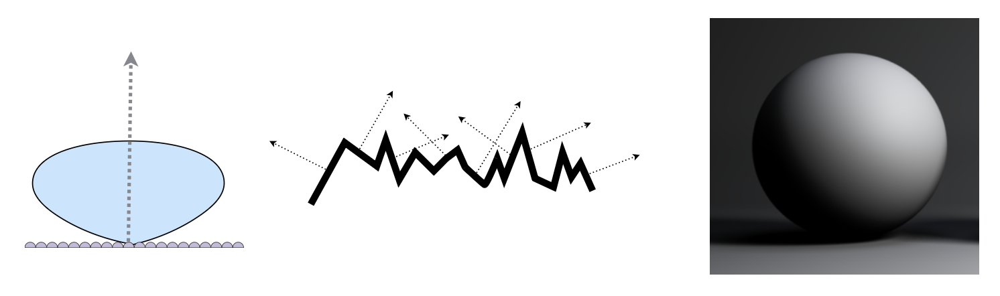
下面来看什么样的微表面会将来自 \(w_i\) 方向的光线沿 \(w_o\) 方向反射： $$ f(\mathbf{i},\mathbf{o})=\frac{\mathbf{F}(\mathbf{i},\mathbf{h})\mathbf{G}(\mathbf{i},\mathbf{o},\mathbf{h})\mathbf{D}(\mathbf{h})}{4(\mathbf{n},\mathbf{i})(\mathbf{n},\mathbf{o})} $$

其中（\(\mathbf{h}\) 表示半向量，即 \(\mathbf{i},\mathbf{o}\) 的角平分线）：
- \(\mathbf{F}(\mathbf{i},\mathbf{h})\)：菲涅尔项
- \(\mathbf{G}(\mathbf{i},\mathbf{o},\mathbf{h})\)：阴影遮罩项（几何项）
- 有些微表面的光可能会被挡住（自遮挡），尤其是在光线从偏水平方向入射时更容易发生
- \(\mathbf{D}(\mathbf{h})\)：法线分布
例子
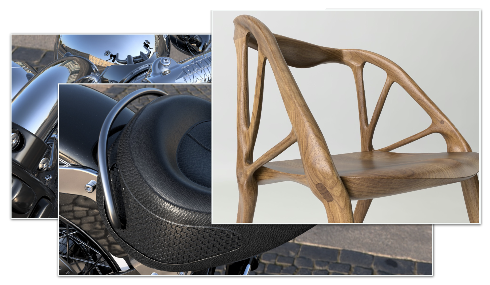
Isotropic / Anisotropic Materials
例子

我们知道，电梯间内部一般都是金属。但顶上的光线打在表面上的结果和之前讲的有些不同——如上图所示，这些光在表面形成了多条亮线。这是因为这些金属是打磨过的，表面和一般的金属并不一样。这样的金属表面具有各向异性(anisotropy)。
各向同性和各向异性的区别来自底层表面的方向性(directionality)：

对于各向异性 BRDF，反射依赖于方位角(azimuthal angle) \(\varphi\)。 $$ f_r(\theta_i,\varphi_i;\theta_r,\varphi_r)\neq f_r(\theta_i,\theta_r,\varphi_r-\varphi_i) $$
这个不等式的意思是这个不等式的意思是 BRDF 值不止和相对的方向角有关，还和绝对的方位角有关。
例子
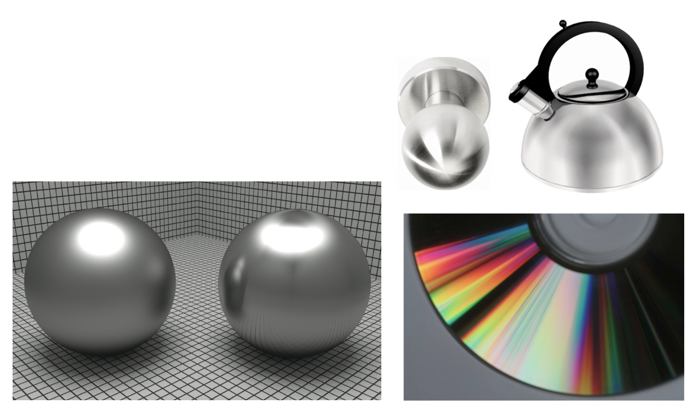

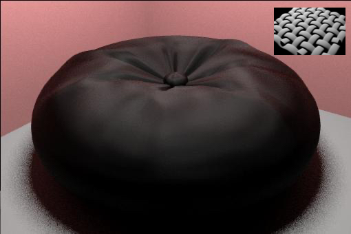

可能读者有过这样的体验：在天鹅绒上 rua 一下，表面的光泽就会发生变化。
本视频由 Sora 2 生成。
Properties of BRDFs
-
非负性(non-negativity)
\[ f_r(\omega_i \rightarrow \omega_r) \ge 0 \] -
线性(linearity)
\[ L_r(\mathrm{p},\omega_r)=\int_{H^2}f_r(\mathrm{p},\omega_i\to\omega_r)L_i(\mathrm{p},\omega_i)\cos\theta_i\mathrm{d}\omega_i \]
-
可逆原理(reciprocity principle)
\[ f_r(\omega_r \rightarrow \omega_i) = f_r(\omega_i \rightarrow \omega_r) \]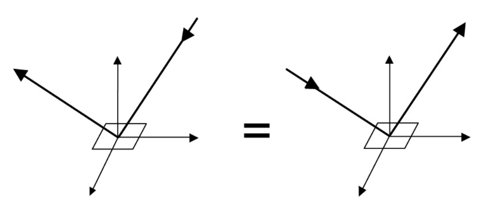
-
能量保存(energy conservation)
\[ \forall\omega_r,\ \int_{H^2}f_r(\omega_i\to\omega_r)\cos\theta_i\mathrm{d}\omega_i\leq1 \] -
各向同性 vs. 各向异性
-
如果是各向同性，\(f_r(\theta_i,\varphi_i;\theta_r,\varphi_r)= f_r(\theta_i,\theta_r,\varphi_r-\varphi_i)\)
- 4D -> 3D，简化计算
-
此时根据可逆性
\[ f_r(\theta_i,\theta_r,\varphi_r-\varphi_i)=f_r(\theta_r,\theta_i,\varphi_i-\varphi_r)=f_r(\theta_i,\theta_r,|\varphi_r-\varphi_i|) \]
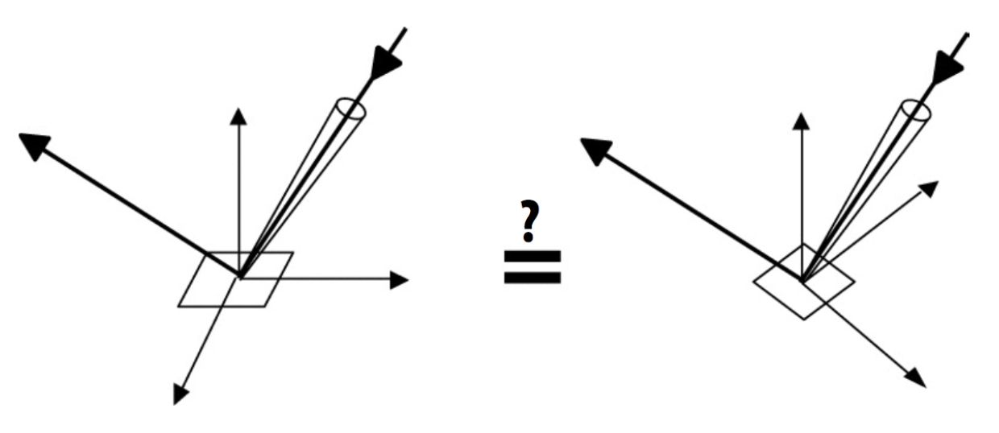
-
Measuring BRDFs
动机

-
避免额外开发/推导模型
- 自动包含所有现有的散射效果
-
希望准确渲染现实世界的材质
- 这对产品设计、特效等很有用
-
前面介绍的理论方法在实际应用上不准确
下面列举一些测量 BRDF 的方法：
-
基于图像的测量方法

-
测角反射计(gonioreflectometer)
- 球形龙门架(Spherical gantry)（@UCSD）
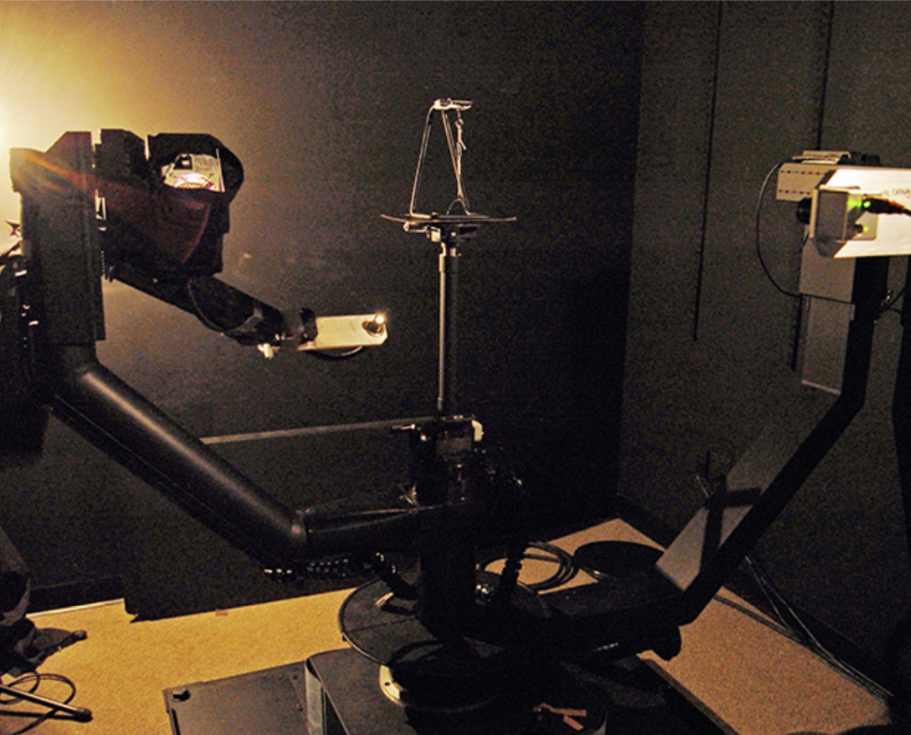
-
通用方法：
foreach outgoing direction wo move light to illuminate surface with a thin beam from wo for each incoming direction wi move sensor to be at direction wi from surface measure incident radiance
一些改进效率的措施：
- 通过各向同性表面，将方向性从 4D 降至 3D
- 利用可逆性可将需要测量的东西减半
- 设计更精巧的光学系统
- ...
测量 BRDFs 时会遇到的挑战
- 对掠射角的精确测量
- 由于菲涅尔效应，这一点非常重要
- 以足够密集的采样进行测量，以捕捉高频镜面反射
- 逆向反射(retro-reflection)
- 随空间变化的反射率(spatially-varying reflectance)
- ...
要表示出测量好的 BRDF，理想的表示应该满足：
- 紧凑的表示
- 对测量数据的精确表示
- 对任意对的方向进行高效求值
- 适用于重要性采样的优良分布

这里介绍其中一种表示法——表格表示(tabular representation)
- 在 \((\theta_i, \theta_o, |\varphi_i - \varphi_o|)\) 上存储等间距(regularly-spaced)的样本
- 更好的做法：重新参数化角度，以更好地匹配高光效果
- 通常需要将测量值重新采样至表格中
- 很高的存储需求
评论区